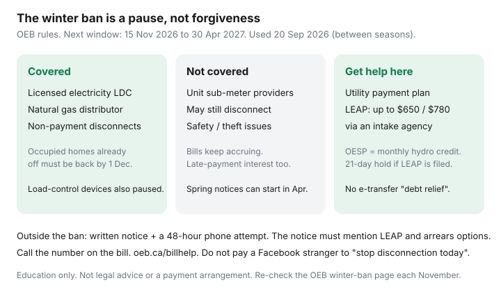

Utilities · Ontario
Ontario winter utility disconnection rules: what the ban covers—and what it does not
Households hear “they can’t cut you off in winter” and treat the hydro or gas bill as optional until May. The Ontario Energy Board’s winter disconnection ban is real. It is also narrow. Licensed distributors pause disconnection for non-payment. They do not pause the balance, the interest, or the May notice. Unit sub-meter condos may not get the pause at all.
This is consumer-protection literacy — helpful, not a debt-relief pitch. If the bill spiked because January was cold, decode it in the Enbridge anatomy or the OEB calculator. If you cannot pay even an installment, call the number on the bill this week, not a Facebook “utility grant.”
Key takeaways
- Residential electricity and natural gas distributors cannot disconnect for non-payment from 15 November to 30 April. The 2025–26 ban ended 30 April 2026. Draft date is 20 September 2026 — we are between seasons. Expect the next window 15 Nov 2026–30 Apr 2027 unless the OEB publishes a change.
- Unit sub-meter providers may still disconnect in winter. Ask.
- Occupied homes already off for non-payment must be reconnected by 1 December without charge. Load-control devices are also restricted in the same window.
- Bills and late fees still accrue. Spring disconnection can be scheduled for 1 May if notices went out in April.
- Help: utility payment arrangements, LEAP (up to $650 / $780 electricity, $650 gas) via an intake agency, OESP monthly hydro credit. No e-transfer strangers.
Electricity winter disconnection ban window (verify dates at draft)
The OEB’s consumer rules for electricity utilities: licensed distributors are banned from disconnecting residential customers for non-payment every year from November 15 to April 30. The Board’s 14 November 2025 news release put that winter’s ban at 15 November 2025–30 April 2026. The 15 April 2026 “end of ban” note reminded customers that reminder and disconnection notices could already be in the mail for a 1 May 2026 effective date.
On 20 September 2026 the next winter’s page may not be posted yet. The rule has been annual. Reload oeb.ca in early November. Do not take a tweet as the clock.

Natural gas rules and differences
The same winter window applies to natural gas distributors for residential non-payment disconnections. Enbridge Gas Ontario customers get the pause from Enbridge, not from a payday lender. Gas and electricity are still two bills, two arrears, two LEAP pots. OESP (monthly electricity support) does not touch the gas debit — the Enbridge companion already says so.
Golden Age Service (65+) and Enbridge payment arrangements are cashflow tools. They are not the winter ban. You can be on equal monthly payments and still be in arrears if the true-up was ignored; see equal billing.
Notice requirements outside the ban period
When the ban is not in force, a distributor still has to follow OEB customer-service rules before they cut you off for non-payment. In plain language:
- A written disconnection notice with timelines.
- A final telephone attempt about 48 hours before disconnection.
- That notice and call must mention LEAP and special arrears agreements for eligible low-income customers.
- A security deposit you did not pay can also lead to disconnection — the winter ban language the OEB publishes is about non-payment of the bill; read the notice you actually received.
If an intake agency tells the utility it is assessing you for LEAP, the utility must suspend disconnection for up to 21 days. That hold is not a secret second winter ban. Use it to file the paperwork.
Why bills still accrue during a ban — arrears do not vanish
The OEB’s April 2026 end-of-ban note is the sentence to tape on the fridge: distributors cannot disconnect between 15 November and 30 April, but bill balances continue to accumulate, including interest on amounts owing. Equal billing does not erase that. Ignoring the envelope until lilac season is how people face a four-figure May debit plus a 10-day notice.
Pay what you can, on the record, during the pause. A partial payment and a documented arrangement beats a silent winter. If usage is the problem, the envelope and thermostat guides on this hub still apply — after you are safe.
Payment arrangements and LEAP-style supports (high level)
| Tool | What it is | What it is not |
|---|---|---|
| Utility arrears arrangement | Split a balance; pick dates; sometimes avoid further late fees | A loan ad; a reason to ignore new bills |
| LEAP emergency grant | Up to $650 electricity ($780 if electrically heated); up to $650 gas; income-tested; intake agency | Monthly support; a cheque in your name; a second grant above the annual cap |
| OESP | Ongoing monthly credit on an eligible electricity bill (including many USMP customers) | A gas credit; a substitute for LEAP arrears |
| Low-income customer-service rules | Longer arrears agreements, deposit relief if you qualify — ask the utility to apply them | Automatic; you usually have to say you want them |
You cannot receive more LEAP than you owe. Apply through the agency list on the OEB LEAP page (Enbridge Gas has pointed to United Way Simcoe Muskoka as a listed agency). Bring ID, the bill, income proof, housing documents, and a bank statement. Emergency funds run out — file when you are behind, not the morning after the 48-hour call.
Where to get help without predatory “debt relief” pitches
- The phone number on the bill — not a number from a text.
- oeb.ca/billhelp and the LEAP / OESP pages.
- 211 Ontario or a community legal clinic if the notice looks wrong or you are in a unit-sub-meter dispute.
- Your LDC’s low-income customer-service desk. Say those words.
Ignore anyone who wants an e-transfer “to stop disconnection today,” a gift card, or remote access to your phone. The OEB has warned that scam volume rises when the ban ends. The utility will not ask you to pay a stranger to keep the heat on.
This is education, not legal advice and not a payment arrangement. If you are in immediate danger (no heat, medically dependent equipment), tell the utility that when you call.
Sources & date stamps
- OEB, Rules for electricity utilities — winter ban 15 Nov–30 Apr; USMP exception; 1 Dec reconnection; load-control devices (used 20 Sep 2026).
- OEB news, 14 Nov 2025 winter ban; 15 Apr 2026 end-of-ban — balances and interest continue; May notices.
- OEB, LEAP — $650 / $780 electricity, $650 gas; 21-day hold; intake agencies.
- OEB, OESP — monthly electricity credit; USMP note.
- Enbridge payment-difficulties / LEAP pointer in the Enbridge bill companion.
Frequently asked questions
When is the winter disconnection ban?
Licensed electricity and natural gas distributors cannot disconnect residential customers for non-payment from 15 November to 30 April each year. The 2025–26 ban ended 30 April 2026. The next window is 15 November 2026 to 30 April 2027 — confirm on the OEB page each fall.
Does the ban apply to my condo’s unit sub-meter bill?
Usually not. The OEB says the winter ban applies to electricity utilities; unit sub-meter providers may still disconnect in winter. Ask your provider for its policy in writing.
Do I still owe the bill during the ban?
Yes. Balances keep growing, including late-payment interest. The ban is a pause on disconnection, not forgiveness. Spring notices can be prepared before 1 May.
What is LEAP?
Low-income Energy Assistance Program emergency help: up to $650 toward an electricity bill ($780 if the home is electrically heated) and up to $650 toward a gas bill, paid to the utility through an intake agency. It is not ongoing monthly relief. A LEAP assessment can trigger a 21-day disconnection hold.
Who do I call so I do not get scammed?
The phone number on the bill, oeb.ca/billhelp, and a listed LEAP intake agency. Ignore DMs that want an e-transfer to “stop disconnection today.”